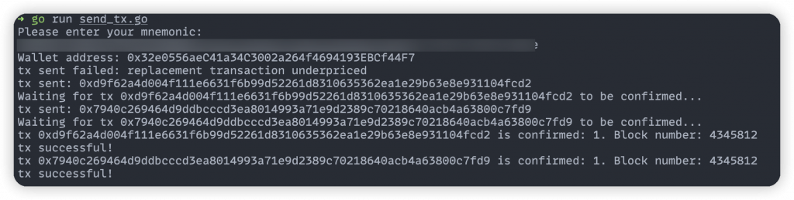
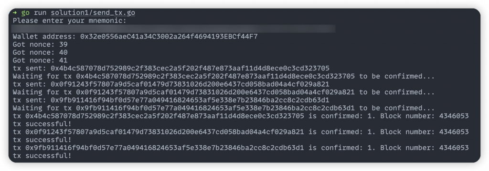
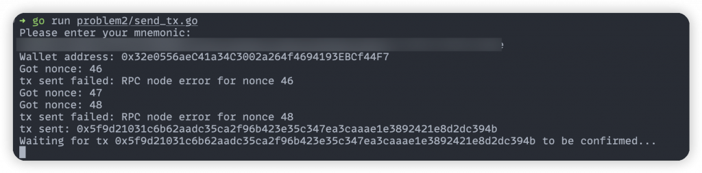
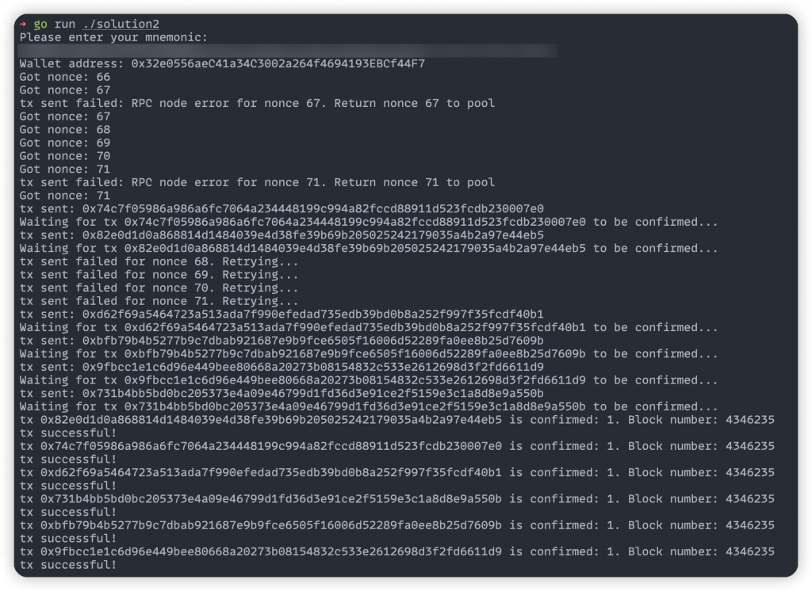

今天我們會講解在後端同時發送大量交易會遇到的問題與解法。回想 Day 17 中的 Meta Transaction 作法，最後一步是把用戶想做的交易與簽章打到後端，由後端發出交易並上鏈，而如果同時有很多用戶在打這個 API，就會發生同時發送交易導致部分交易無法送出或被覆蓋掉的問題。
在昨天的內容中，我們使用 UNI Token 的 Go Binding 送出 Token Transfer 交易時，他會自動去鏈上查詢最新的 Nonce 並放進交易中。但如果同一瞬間有三個交易要被發出去，到鏈上查詢 Nonce 時很可能會查到同樣的值，這就會導致重複的 Nonce 變成了無效交易（一個地址的一個 Nonce 只能對應到一筆上鏈的交易），而被「覆蓋」掉。以下的程式碼展示了這種狀況：
[code] // send 3 transaction concurrently wg := sync.WaitGroup{} for i := 0; i < 3; i++ { wg.Add(1) go func() { tx, err := sendUniTokenTransferTx(client, account.Address, privateKey) if err == nil { fmt.Printf(“tx sent: %s”, tx.Hash().Hex()) waitUntilTxConfirmed(tx, client) } else { fmt.Printf(“tx sent failed: %s”, err.Error()) } wg.Done() }() } wg.Wait()
[/code]
簡單來說就是同時發送三個交易，並使用 sync.WaitGroup
等到三個交易都上鏈後結束程式。執行結果如下：

可以看到其中有一筆交易失敗了，錯誤訊息是
replacement transaction underpriced。會產生這個錯誤的原因是當我送出兩筆同樣
Nonce 的交易到鏈上時，RPC Node 會把第二筆交易當成是第一筆交易的
replacement
transaction，意思是第二筆交易是來覆蓋第一筆交易的，這個功能常被用來取消剛發送而還沒有上鏈的交易，作法是發送一筆轉帳給自己
0 ETH 的同 Nonce 的交易來覆蓋上一筆交易。
而 Ethereum 為了避免有人發大量的相同 Nonce 的交易給礦工造成潛在的
Denial of Service 攻擊，會限制同一個 Nonce 的情況下新交易的 Gas Price
至少要比舊交易的 Gas Price 高 10%，來提高攻擊成本。因此上面會發生
replacement transaction underpriced 錯誤就是因為新交易的
Gas Price
不夠高（underpriced）。而最本質的問題就是這筆交易拿到了跟之前的交易一樣的
Nonce。
為了解決 Nonce 的 Race condition，只要確保取得當下的 Nonce 跟把 Nonce +1 這兩件事是一個原子操作（atomic operation）即可，這樣就能讓 Nonce 的 concurrent access 持續拿到往上加的值。
因此可以使用 atomic
package 來實作這件事，在程式中紀錄 currentNonce
代表下一筆交易應該要用什麼 Nonce 送出，並在 main 一開始去鏈上查詢最新的
Nonce 要用多少，後續就可以用 atomic.AddInt64
來取得每筆交易的下一個 Nonce。程式碼如下：
[code] var currentNonce int64 = -1 // -1 means not initialized
// in main()
// init nonce
nonce, err := client.PendingNonceAt(context.Background(), account.Address)
if err != nil {
log.Fatal(err)
}
atomic.StoreInt64(¤tNonce, int64(nonce))
// in sendUniTokenTransferTx()
// get next nonce
nonce := atomic.AddInt64(¤tNonce, 1) - 1
fmt.Printf("Got nonce: %d\n", nonce)
chainID := big.NewInt(11155111)
amount := rand.Int63n(1000000)
tx, err = uniToken.Transfer(
&bind.TransactOpts{
From: common.HexToAddress(address.Hex()),
Signer: func(_ common.Address, tx *types.Transaction) (*types.Transaction, error) {
return types.SignTx(tx, types.NewEIP155Signer(chainID), privateKey)
},
Value: big.NewInt(0),
GasPrice: gasPrice,
Nonce: big.NewInt(nonce),
},
common.HexToAddress("0xE2Dc3214f7096a94077E71A3E218243E289F1067"),
big.NewInt(amount),
)[/code]
這樣就能確保同時發送交易時的 Nonce 是嚴格遞增的了，並且每筆交易都能成功上鏈，執行結果如下：

同樣的做法也可以延伸到如果系統中有多個 instance 在執行的狀況（例如使用 serverless 方式或 K8S 部署），透過像 Redis 這種服務來追蹤最新的 Nonce State 並做好 Atomic 操作，就能實作出多個程式 instance 同時發送多筆交易的邏輯。
即使我們已採取了上述措施，仍可能遇到其他問題。例如只要把同時發送交易的數量從
3 筆改成 10 筆，馬上會遇到在呼叫 uniToken.Transfer 時
Alchemy API 回傳 429 (Too Many Requests) 的問題，因為太頻繁地打 Alchemy
API 了。
這時會發生一個嚴重的問題：當我同時送出 Nonce 10~15 的交易，但 Nonce 12 的交易在送出時被 Alchemy 拒絕了，這時 Nonce 13~15 甚至未來發送的所有交易都會被卡住無法上鏈！ 雖然這些交易有成功被 broadcast 給 RPC Node，但為了符合 Nonce 嚴格遞增的規則，這些交易會一直被放在一個叫 memory pool 的地方（簡稱 mempool），等待礦工打包上鏈。關於 mempool 的機制有興趣的讀者可以看這裡。
以下透過一個範例程式來展示這種錯誤出現的狀況：
[code] // in sendUniTokenTransferTx() if rand.Int()%2 == 0 { // simulate RPC node error return nil, fmt.Errorf(“RPC node error for nonce %d”, nonce) } tx, err = uniToken.Transfer( // … ) return
[/code]
這模擬了有 50% 的機率會在送交易到 Alchemy 時壞掉。實際執行結果

可以看到 Nonce 46 在送出時壞掉，而 Nonce 47 有成功送出，這就導致程式會一直等不到 Nonce 47 的交易被確認上鏈。
除了 Nonce
沒被使用到的問題之外，其實還有另一個情況會導致交易被卡在鏈上，那就是交易的
Gas Price 太低了。雖然有用 SuggestGasPrice 去估計要花多少
Gas Price，但在極端情況有可能下一個 block 的 Gas Price 增加很多，而 Gas
Price
太低導致的卡鏈也可能高達幾個小時！因此這也是一個需要解決的問題。
要解決交易被 Alchemy 拒絕的問題，最簡單的方法就是重試幾次就好，但考量到一隻 API 通常最慢要在幾秒內回傳結果，才不會讓 end user 等太久，因此也不能無限的等待跟重試。這樣當系統流量大時，還是會遇到重試幾次後還是失敗而必須 return error 給前端的狀況。
假設是 Nonce 12 出錯，那當發現這筆交易最終無法被廣播出去時，就必須要讓未來的交易可以重複利用 Nonce 12 來送出交易才行。這樣的好處是 Nonce 13~15 的交易已經發出後，就算過一陣子我們再成功發出 Nonce 12 的交易，礦工可以一起幫 Nonce 12~15 的交易打包上鏈，這樣就能避免掉 Nonce 13~15 卡在 mempool 中的問題。
所以需要建立一個 Nonce Pool 去儲存當下能使用的 Nonce 們，並支援當交易無法被廣播上鏈時，把對應的 Nonce 歸還回 Nonce Pool 的操作。而每次要從 Nonce Pool 中取出新的 Nonce 時，只要取裡面最小的值即可。而能實現這些操作的資料結構就是一個 min heap。
此外如果要解決 Gas Price 太低導致卡鏈的問題，最簡單的方法是固定多給一些 Gas Price，就能很大程度地避免這個問題了。這背後是因為 EIP-1559 中定義了 Base Fee 在下個 block 最多只會比上個 block 增加 12.5%，因此可以根據這個值來估計 Gas Price 的變化幅度上限。
先解決 Gas Price 可能太低的問題，最簡單粗暴的作法是拿到建議數值後固定加 30 Gwei：
[code] // get gas price gasPrice, err := client.SuggestGasPrice(context.Background()) if err != nil { log.Fatal(err) } // increase gas price by 30 gwei to avoid stuck tx gasPrice = new(big.Int).Add(gasPrice, big.NewInt(30000000000))
[/code]
接下來是 Nonce Pool 的實作，會需要支援以下幾個 function：
[code] func NewNoncePool(initialNonce int64) NoncePool func (n NoncePool) GetNonce() int64 func (n *NoncePool) ReturnNonce(returnedNonce int64)
[/code]
這樣可以在程式初始化時到鏈上查詢最新的 Nonce 後用
NewNoncePool 建立 NoncePool ，後續就可以用
GetNonce() 拿到 pool 中最小的 Nonce，以及要歸還 Nonce
時使用 ReturnNonce() 。可以使用 Go 的 container/heap package
來實作 NoncePool 中的 min heap，以下給出這幾個 function
的實作：
[code] package main
import (
"container/heap"
"sync"
)
type IntHeap []int64
func (h IntHeap) Len() int { return len(h) }
func (h IntHeap) Less(i, j int) bool { return h[i] < h[j] }
func (h IntHeap) Swap(i, j int) { h[i], h[j] = h[j], h[i] }
func (h *IntHeap) Push(x interface{}) {
*h = append(*h, x.(int64))
}
func (h *IntHeap) Pop() interface{} {
old := *h
n := len(old)
x := old[n-1]
*h = old[0 : n-1]
return x
}
type NoncePool struct {
nonces IntHeap
lock sync.Mutex
}
func NewNoncePool(initialNonce int64) *NoncePool {
pool := &NoncePool{}
heap.Init(&pool.nonces)
heap.Push(&pool.nonces, initialNonce)
return pool
}
func (n *NoncePool) GetNonce() int64 {
n.lock.Lock()
defer n.lock.Unlock()
// Get min nonce
nonce := heap.Pop(&n.nonces).(int64)
if n.nonces.Len() == 0 {
// Add next nonce if nonce pool is empty
heap.Push(&n.nonces, nonce+1)
}
return nonce
}
func (n *NoncePool) ReturnNonce(returnedNonce int64) {
n.lock.Lock()
defer n.lock.Unlock()
heap.Push(&n.nonces, returnedNonce)
}[/code]
裡面多使用了 sync.Mutex 來確保 GetNonce()
跟 ReturnNonce() 的操作都是原子性的，避免 Race
Condition。另外值得注意的是在 GetNonce() 中如果拿完一個
Nonce 後 heap 空了，就要把剛拿出的值 +1 後再丟回去，才能隨時拿到最新的
Nonce 值。
針對 NoncePool
的行為我們可以寫個測試來驗證，讀者也可用來檢驗自己的理解：
[code] func TestNoncePool(t *testing.T) { pool := NewNoncePool(0) assert.Equal(t, int64(0), pool.GetNonce()) assert.Equal(t, int64(1), pool.GetNonce()) assert.Equal(t, int64(2), pool.GetNonce()) pool.ReturnNonce(0) assert.Equal(t, int64(0), pool.GetNonce()) assert.Equal(t, int64(3), pool.GetNonce()) assert.Equal(t, int64(4), pool.GetNonce()) pool.ReturnNonce(3) pool.ReturnNonce(1) assert.Equal(t, int64(1), pool.GetNonce()) assert.Equal(t, int64(3), pool.GetNonce()) assert.Equal(t, int64(5), pool.GetNonce()) }
[/code]
最後把 NoncePool 的相關操作整合到 main 中
，並在發送交易到 Alchemy 時加上最多三次的重試就完成了：
[code] // in main() // send 6 transaction concurrently wg := sync.WaitGroup{} for i := 0; i < 8; i++ { wg.Add(1) go func() { tx, nonce, err := sendUniTokenTransferTx(client, account.Address, privateKey) if err == nil { fmt.Printf(“tx sent: %s”, tx.Hash().Hex()) waitUntilTxConfirmed(tx, client) } else { fmt.Printf(“tx sent failed: %s. Return nonce %d to pool”, err.Error(), nonce) noncePool.ReturnNonce(nonce) } wg.Done() }() } wg.Wait()
// in sendUniTokenTransferTx()
// get next nonce
nonce = noncePool.GetNonce()
fmt.Printf("Got nonce: %d\n", nonce)
chainID := big.NewInt(11155111)
amount := rand.Int63n(1000000)
if rand.Int()%3 == 0 {
// simulate RPC node error
return nil, nonce, fmt.Errorf("RPC node error for nonce %d", nonce)
}
// retry 3 times when sending tx to RPC node
for i := 0; i < 3; i++ {
tx, err = uniToken.Transfer(
&bind.TransactOpts{
From: common.HexToAddress(address.Hex()),
Signer: func(_ common.Address, tx *types.Transaction) (*types.Transaction, error) {
return types.SignTx(tx, types.NewEIP155Signer(chainID), privateKey)
},
Value: big.NewInt(0),
GasPrice: gasPrice,
Nonce: big.NewInt(nonce),
},
common.HexToAddress("0xE2Dc3214f7096a94077E71A3E218243E289F1067"),
big.NewInt(amount),
)
if err == nil {
return
}
fmt.Printf("tx sent failed for nonce %d. Retrying...\n", nonce)
time.Sleep(1 * time.Second)
}
return[/code]
程式碼中把同時發送交易的次數改成 8 次，就能觀察到送出交易至 Alchemy 時收到 429 的情況。執行結果如下：

可以看到失敗的兩筆交易的 Nonce 都有被成功歸還回 Nonce Pool，並且部分交易經過重試後全部都能正常送出了！
今天我們深入探討了在後端遇到同時發送交易時，會遇到的問題與解決策略，完整的程式碼在這裡。可以發現這些都是從區塊鏈的機制衍伸出來的問題，因此要寫出高容錯的後端程式必須對區塊鏈知識有深入的了解。最後有兩個問題留給讀者思考與練習，也歡迎在留言區交流：
至此讀者對在後端發送交易已經有十分深入的理解了，接下來會進入到如何在後端整理較複雜的鏈上資料的主題，包含 Token Balance 與交易歷史。